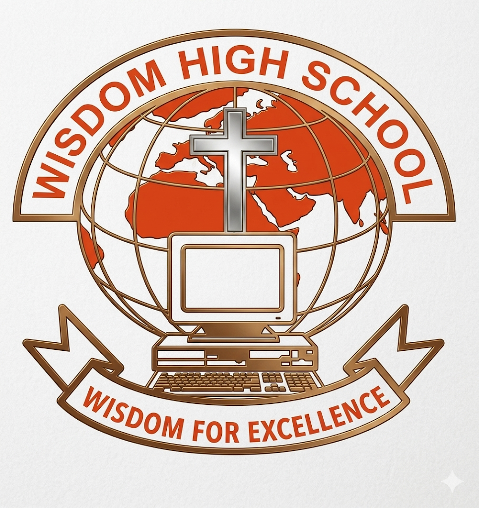

WISDOM FOR EXCELLENCE
KOLE DISTRICT
AKALO
Email:info@wisdomhighschool.ac.ug
MAIN RECEPTION:+256772479966
Wisdom high school, Akalo is atop performaning mixed ordinary and advanced level boarding school in Kole district, Northern uagnda (New Lira)
Wisdom high school was founded in 2018 knowned for academic excellence ( ranking among the top in the Lango sub-region) and strong christian principles, it offers affordable quality education.
Motto: Wisdom for excellence.At wisdom high school, we believe that every child has the potential to excel, redardless of the challenges.
Vision:
To be a model school in providing holistic, christian-based education to develop well-rounded, skilled , and displined individuals.
school mission:
To foster wisdom in a christian environment, instilling values such as Godliness, discipline and innovation.
© Wisdom High School